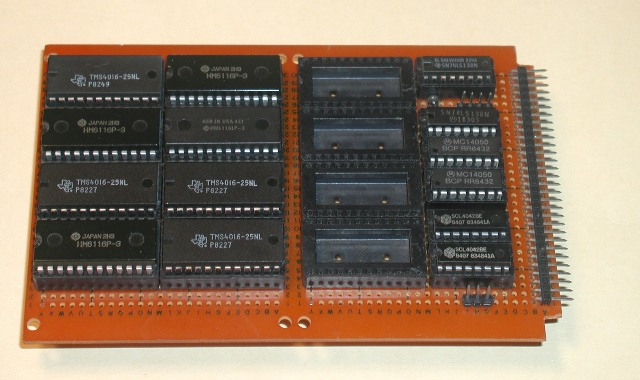
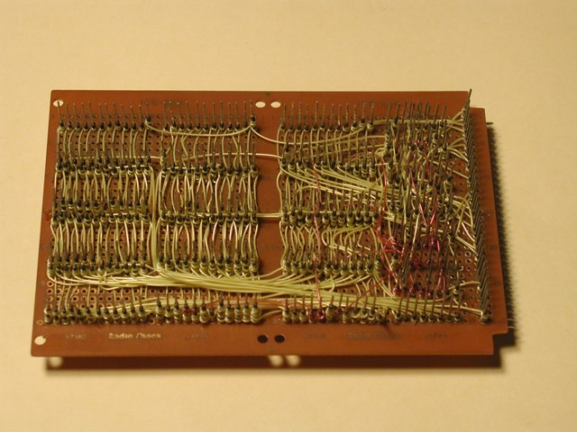

This is the top view of the 24K memory card, only 16K is populated. The jumpers on the card are for setting card location within the address space, the need for more memory never materialized.

The Bottom of the memory card. Back then building a computer was a little like knitting a sweater, the hours of handy work far out numbered the hours doing real engineering work.
